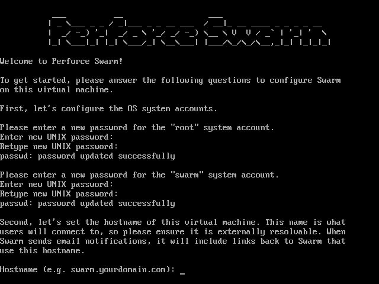
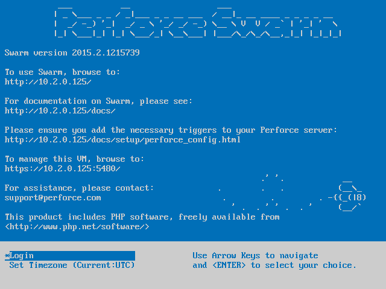

OVA configuration
Swarm is available as an OVA, an open virtualization appliance that requires minimal configuration.
Note
A Helix Versioning Engine can refer to a Perforce server, proxy, broker, replica, edge server, commit server, or cluster/node. It does not refer to a service user; service users are used to coordinate replication in a Helix Versioning Engine.
Use the OVA if you want to:
-
Simplify the installation and configuration steps
-
Experiment with Swarm without using additional hardware
-
Install Swarm without having a Linux-based server available
To use the OVA, follow the instructions on this page and skip to the Establish trigger token section.
-
Download the Swarm OVA.
-
Import the OVA into your virtualization environment. See VMWare OVA import, or Oracle VirtualBox import.
-
Start the virtual machine; diagnostic and boot information appears.
-
Several configuration prompts appear in sequence:

-
Password for the root user
-
Password for the system swarm user
-
Hostname for the virtual machine
-
Helix Versioning Engine port (
P4PORT)Important
If your Helix Versioning Engine is deployed using the commit-edge architecture, ensure that Swarm's
portvalue points to the commit server.For more information, see "Commit-edge Architecture" in the Perforce Server Administrator's Guide: Multi-site Deployment.
-
Userid of a normal user in the Helix Versioning Engine with admin privileges
-
Ticket, or password, of the admin-level Perforce user
-
Mail relay host
Once the prompts have been answered successfully, the virtual machine completes its configuration activities. When ready, a welcome screen is displayed:

The welcome screen provides URLs to access Swarm, its documentation, and the virtual machine management console.
-
-
Update the OVA with security updates and bug fixes:
-
Use ssh to log into the OVA as the root user.
-
Enter the following commands to update the OVA's list of packages and to apply any available upgrades.
$ apt-get update $ apt-get upgrade
See OVA Management for more details.
-
Note
After the OVA is configured and running, you can adjust the configuration
by using ssh to connect to the virtual machine as the
system swarm user and editing the
Swarm configuration file
/opt/perforce/swarm/data/config.php. Swarm's installation
folder is /opt/perforce/swarm/.
The OVA setup is now complete. Continue with the steps listed in Perforce configuration for Swarm to complete the installation of Swarm.
VMWare OVA import
The Swarm OVA works with several VMWare virtualization products, such as Player, Workstation, or Fusion.
-
In the VMWare product, select .
-
Browse to the
swarm.ovafile and click . -
Type a name for the virtual machine, such as Swarm, and click .
Oracle VirtualBox import
The Swarm OVA works with Oracle VirtualBox, version 4.x+.
-
In VirtualBox, select
-
Click .
-
Browse to the
swarm.ovafile and click , -
Click (might be for some versions of VirtualBox)
-
Click .